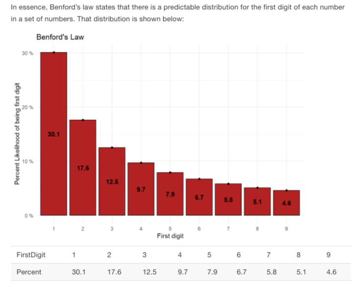

“There are many different ways data can be distributed. Often data will naturally adhere to predefined distributions. Heights and weights generally follow a normal distribution, repeated rolls of a fair die will follow a uniform distribution (no possibility is more likely than another), etc.
The point is, given a particular scenario, we can often expect how data will be distributed.
Suppose I flipped a coin 100 times and ask you to guess how many times the coin would land on a head. You would probably guess close to 50. This is because you’re familiar with the expected distribution of coin toss results.”

You have recently been hired by the U.S. internal revenue service (IRS) to catch corporate cheaters. You have been given three companies to investigate. You will need to decide if the IRS should build a legal case to investigate the institution for fraud.